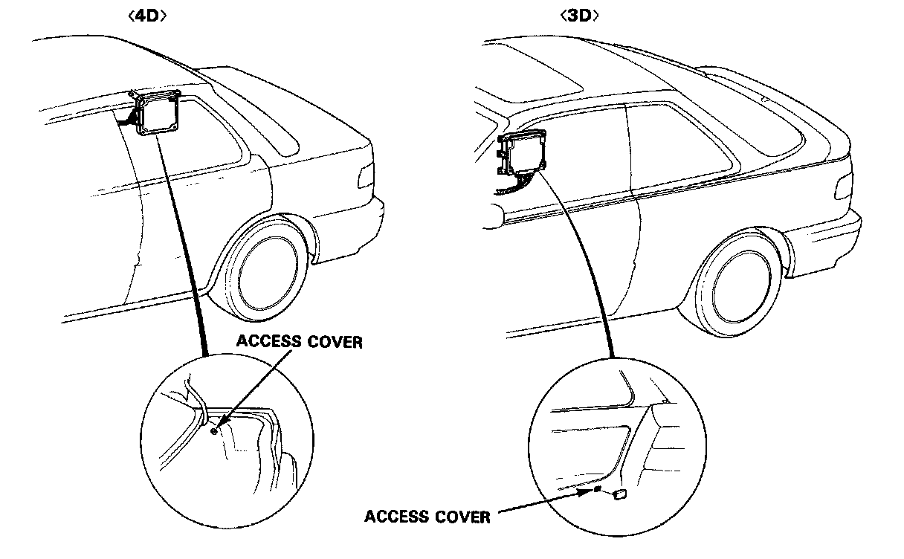
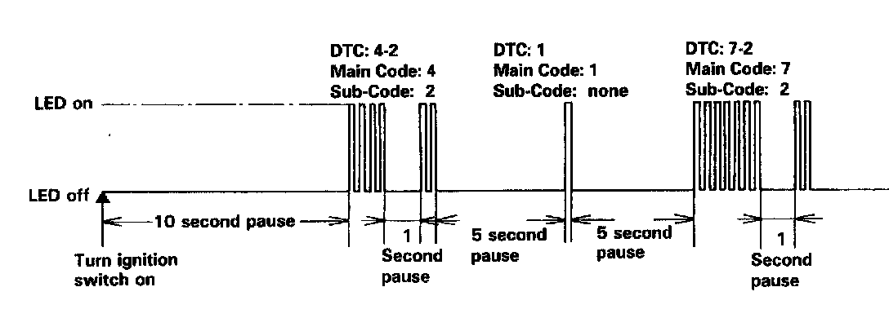

Displaying & Reading Trouble Codes

Diagnostic Trouble Code (DTC)
1. Remove the ABS control unit access cover.
2. Turn the ignition switch on, but do not start the engine.

3. Record the blinking frequency of the LED on the ABS control unit. The blinking frequency indicates the Diagnostic Trouble Code (DTC).
NOTE:
- The ABS control unit can indicate up to the three DTCs.
- If the LED does not light, see Troubleshooting of ABS Indicator Light Circuit. Initial Inspection and Diagnostic Overview
- If you miscount the blinking frequency, turn the ignition switch off, then turn on to blink the LED again.
- After the repair is completed, disconnect the ABS B2 (15 A) fuse for at least three seconds to erase the ABS control unit's memory. Then turn the ignition key on again and recheck.
- The memory is erased if the connector is disconnected from the ABS control unit or the ABS control unit is removed from the body.
- After recording the main and sub-code (if applicable), refer to the Symptom-to-System Chart.